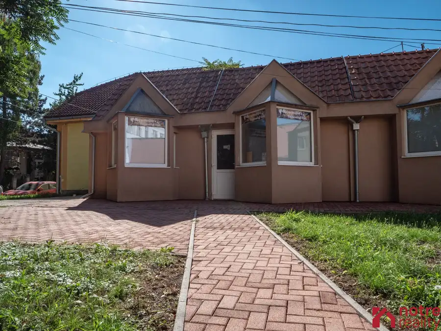
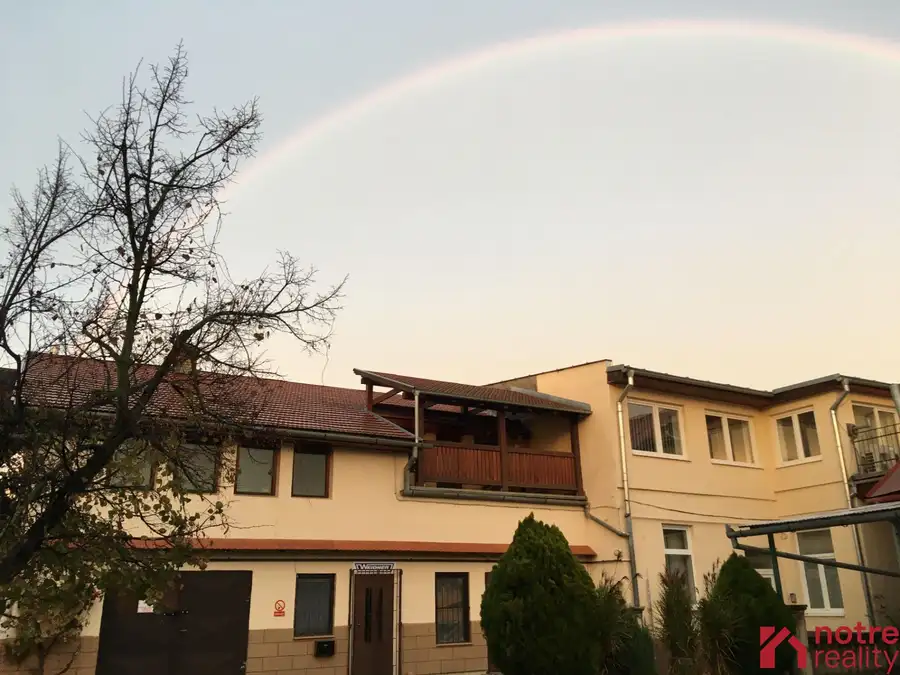
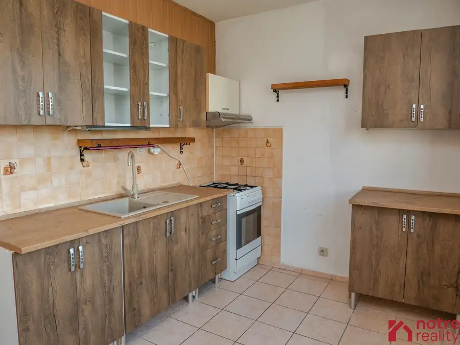

Na prenájom reprezentatívne nebytové priestory v centre mesta Lučenec
Lučenec
- Plocha140 m²
- Poschodie0.
- Stavpo rekonštrukcii
- Vlastníctvoosobné
O nehnuteľnosti
Ponúkame na prenájom atraktívne nebytové priestory s celkovou výmerou 140 m2, situované v centre mesta. Priestory sú ideálne pre prevádzku poradenských, konzultačných alebo administratívnych kancelárií, klientských centier, prípadne ďalších služieb, ktoré vyžadujú komfortné prostredie pre prácu s klientmi.
Dispozícia priestoru umožňuje flexibilné prispôsobenie podľa potrieb nájomcu. Hlavná, predná časť od ulice, ktorá pozostáva z otvorenej haly s výmerou približne 100 m2, kt je presvetlená veľkými výkladovými oknami. Vďaka možnosti osadenia priečok, je priestor možné jednoducho rozdeliť na viacero samostatných kancelárií alebo pracovísk.
V zadnej časti, od dvora, sa nachádza samostatný bezbariérový vstup a priestor vhodný na vytvorenie dvoch samostatných kancelárií. Súčasťou tejto časti je aj sociálne zariadenie a ďalšia miestnosť využiteľná ako šatňa, sklad, alebo technické zázemie.
Výhody priestorov :
- celková výmere 140 m2
- reprezentatívna poloha v centre mesta
- otvorený priestor s možnosťou dispozičných úprav podľa potrieb nájomcu
- veľké presklené okná orientované do ulice
- rekonštruovaná predná časť priestoru
- odhlučnené okná s trojsklom
- klimatizácia
- bezpečnostné vstupné dvere
- elektronický zabezpečovací systém (alarm)
- kamerový systém
- bezbariérový vstup do zadnej časti
- parkovanie z oboch strán objektu
Nájomné za celý priestor je 1.900Eur/mesačne bez energií.
V prípade záujmu o obhliadku, alebo bližšie informácie nás neváhajte kontaktovať.
Parametre
| Celková rozloha | 140 m² |
|---|---|
| Poschodie | prízemie |
| Vlastníctvo | osobné |
| Stav | po rekonštrukcii |
| Parkovanie | verejné |
| Postavené z | tehla |
| Zariadenie | nezariadený |
| Zateplený objekt | áno |
| Klimatizácia | áno |
| Bezbariérový prístup | áno |
| Okná | plastové |
| Dátum zverejnenia | 6. 8. 2026 |
Kde to je
Mohlo by Vás zaujímať

Nebytové priestory7 Cena dohodouNebytové priestory s pozemkom v centre mesta Lučenec Lučenec 100 m² Nebytové priestory s pozemkom sú v úplnom centre mesta Lučenec. Na pozemku o výmere 400 m2 je postavená budova, ktorej montovaný skelet je zo…
Nebytové priestory10 310 000 €Podnikateľský objekt v centre mesta Lučenec Lučenec 1162 m² PODNIKATEĽSKÝ OBJEKT je situovaný v lukratívnej časti v meste Lučenec. Celková výmera pozemku 1162 m2. Na pozemku sa nachádzajú kancelárske priestory…
Byt9 95 000 €Slnečný 3 izbový byt na Rúbanisko III v Lučenci Lučenec 3-izbový71 m² Slnečný trojizbový byt na Rúbanisku III v Lučenci je po čiastočnej rekonštrukcii, v byte sú plastové okná so žalúziami. Byt sa nachádza v zateplenom…